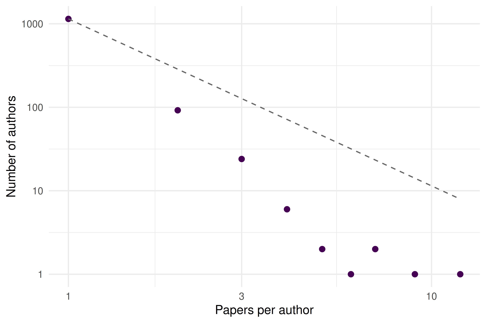
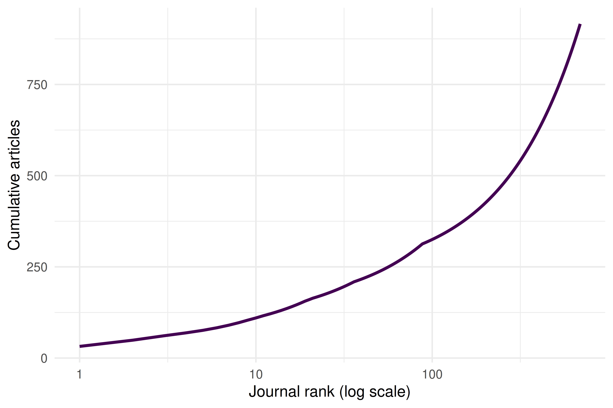
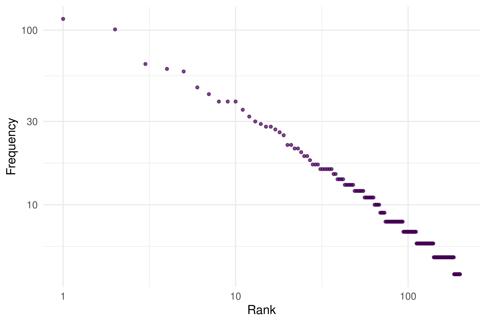
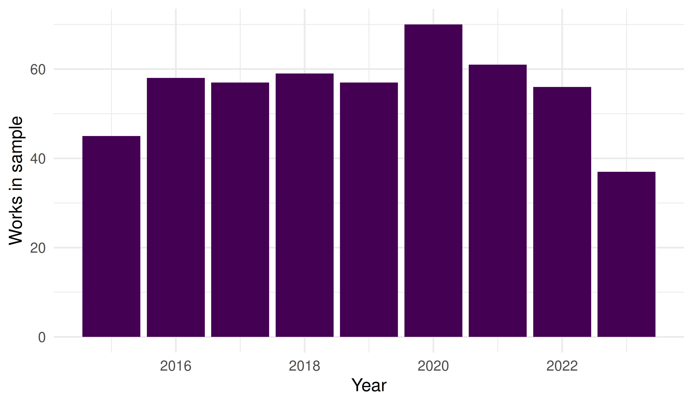

3 Theoretical Underpinnings
3.1 Learning objectives
After completing this chapter, you will be able to:
- State Lotka’s, Bradford’s, and Zipf’s laws and explain the empirical patterns they describe
- Test whether a corpus of publications approximately follows Lotka’s inverse-square law
- Construct a Bradford plot to identify core and peripheral journals in a field
- Explain Price’s law of exponential growth and the Matthew Effect in science
- Recognise power-law-like distributions in bibliometric data
3.3 Conceptual background
Scientometrics rests on a small number of empirical regularities discovered across decades of studying scholarly communication:
Lotka’s Law (Lotka 1926) observes that the number of authors producing n papers is approximately proportional to 1/n². A few prolific authors generate a large share of output, while most researchers publish only one or two papers.
Bradford’s Law (Bradford 1934) describes the scattering of articles across journals. For a given topic, a small core of journals contains roughly one-third of all relevant articles; a larger zone contains the next third; and a much larger periphery the final third. Each successive zone contains roughly the same number of articles but geometrically more journals.
Zipf’s Law states that the frequency of a word is inversely proportional to its rank. In scientific text, a handful of terms dominate while the vast majority appear rarely.
Price’s Law (Solla Price 1963) generalises these observations: the cumulative output of science grows exponentially, doubling roughly every 10–15 years. Price also noted that the square root of all contributors produce half of all contributions.
The Matthew Effect (Merton 1968) — named after the Gospel of Matthew (“to those who have, more shall be given”) — describes cumulative advantage in science. Well-known researchers attract disproportionate credit and resources, amplifying initial differences in visibility. This mechanism helps explain the skewed distributions observed by Lotka and Price.
3.4 Worked example
We use a corpus of works from the journal Scientometrics to demonstrate each law.
3.4.2 Lotka’s Law
We unnest authors and count the number of papers per author in this sample.
author_prod <- works |>
select(id, authorships) |>
unnest(authorships, names_sep = "_") |>
count(authorships_display_name, name = "n_papers") |>
count(n_papers, name = "n_authors") |>
arrange(n_papers)
author_prod#> # A tibble: 8 × 2
#> n_papers n_authors
#> <int> <int>
#> 1 1 1107
#> 2 2 100
#> 3 3 23
#> 4 4 8
#> 5 5 2
#> 6 6 2
#> 7 9 1
#> 8 11 1
lotka_c <- author_prod$n_authors[1]
author_prod |>
ggplot(aes(x = n_papers, y = n_authors)) +
geom_point(colour = palette_sci(1), size = 2) +
geom_line(
aes(y = lotka_c / n_papers^2),
linetype = "dashed", colour = "grey40"
) +
scale_x_log10() +
scale_y_log10() +
labs(x = "Papers per author", y = "Number of authors") +
theme_sci()
Figure 3.1: Author productivity distribution. The dashed line shows the inverse-square law predicted by Lotka.
The data approximate the inverse-square pattern, though real distributions often deviate from the exact exponent of 2.
3.4.3 Bradford’s Law
We count how many articles each journal source contributes (across a broader query).
broad_works <- oa_fetch(
entity = "works",
search = "bibliometrics",
from_publication_date = "2020-01-01",
to_publication_date = "2023-12-31",
options = list(sample = 1000, seed = 42)
)
journal_counts <- broad_works |>
filter(!is.na(source_display_name)) |>
count(source_display_name, name = "articles", sort = TRUE) |>
mutate(
cum_articles = cumsum(articles),
rank = row_number()
)
journal_counts |>
ggplot(aes(x = rank, y = cum_articles)) +
geom_line(colour = palette_sci(1), linewidth = 1) +
scale_x_log10() +
labs(x = "Journal rank (log scale)", y = "Cumulative articles") +
theme_sci()
Figure 3.2: Bradford plot: cumulative articles vs. log journal rank.
3.4.4 Zipf’s Law
We extract title words and examine their frequency distribution.
word_freq <- works |>
select(display_name) |>
unnest_tokens(word, display_name, token = "words") |>
anti_join(tidytext::get_stopwords(), by = "word") |>
count(word, sort = TRUE) |>
mutate(rank = row_number())
word_freq |>
head(200) |>
ggplot(aes(x = rank, y = n)) +
geom_point(colour = palette_sci(1), size = 1, alpha = 0.7) +
scale_x_log10() +
scale_y_log10() +
labs(x = "Rank", y = "Frequency") +
theme_sci()
Figure 3.3: Word frequency vs. rank for article titles, approximating Zipf’s law.
3.4.5 Price’s growth law
works |>
mutate(year = year(publication_date)) |>
count(year) |>
ggplot(aes(x = year, y = n)) +
geom_col(fill = palette_sci(1)) +
labs(x = "Year", y = "Works in sample") +
theme_sci()
Figure 3.4: Annual publication counts for sampled works, illustrating the growth of bibliometrics literature.
3.5 Diagnostics and interpretation
These laws are empirical regularities, not physical laws. They describe approximate patterns:
- Lotka’s exponent is often not exactly 2; values between 1.5 and 3.5 are common depending on the field and time window.
- Bradford zones are sensitive to how you define the subject scope.
- Zipf’s law holds best for common words; the tail deviates.
- Price’s exponential growth eventually saturates — science cannot grow faster than the economy indefinitely.
The value of these laws is not predictive precision but the insight that skewed distributions are the norm, not the exception, in scholarly communication.
3.7 Limitations and responsible use
- These laws describe aggregate patterns, not individual behaviour. A researcher publishing one paper is not “less productive” in any evaluative sense — Lotka’s law is a statistical observation, not a performance standard.
- The Matthew Effect (Merton 1968) is a mechanism that amplifies inequality. Recognising it should prompt caution about using cumulative metrics (like the h-index) that inherit and reinforce this bias.
- Power-law fitting is notoriously difficult. Many distributions that “look” power-law on a log-log plot are better described by lognormal or stretched exponential models. Rigorous fitting requires maximum-likelihood methods and goodness-of-fit tests (Hicks et al. 2015).
3.9 Common pitfalls
- Eyeballing log-log plots. A straight line on a log-log plot does not prove a power law. Use formal statistical tests.
- Confusing description with prescription. “Most authors publish few papers” does not mean they should publish more.
- Ignoring field differences. The exponent of Lotka’s law and the scattering pattern of Bradford’s law vary substantially across disciplines.
- Assuming stationarity. These patterns can shift over time as publication norms change (e.g., the rise of mega-journals).
3.10 Exercises
Lotka exponent. Fit a linear model to the log-log author productivity data. What exponent do you estimate? How does it compare to Lotka’s original value of 2?
Bradford zones. Divide the journal list into three zones of roughly equal article counts. How many journals are in each zone? What is the ratio between successive zone sizes?
Your field’s Zipf distribution. Fetch 500 works in a field of your choice. Extract title words and plot the Zipf distribution. Are the most frequent terms what you would expect?
Matthew Effect simulation. Write a simple simulation: start 100 authors with 1 paper each. At each time step, an author gains a new paper with probability proportional to their current count. After 50 steps, plot the distribution. Does it resemble Lotka’s law?
3.11 Solutions
Solutions are provided in 2.11.
3.12 Further reading
- Lotka (1926) — The original observation on author productivity distributions.
- Bradford (1934) — Journal scattering and the Bradford law.
- Solla Price (1963) — Exponential growth of science and cumulative advantage.
- Merton (1968) — The Matthew Effect: how advantage accumulates in science.
- Garfield (1955) — Citation indexing, the empirical basis for much of scientometrics.
- Waltman (2016) — A modern review contextualising these classical laws within citation impact measurement.
3.13 Session info
#> R version 4.4.1 (2024-06-14)
#> Platform: x86_64-pc-linux-gnu
#> Running under: Ubuntu 24.04.4 LTS
#>
#> Matrix products: default
#> BLAS: /usr/lib/x86_64-linux-gnu/openblas-pthread/libblas.so.3
#> LAPACK: /usr/lib/x86_64-linux-gnu/openblas-pthread/libopenblasp-r0.3.26.so; LAPACK version 3.12.0
#>
#> locale:
#> [1] LC_CTYPE=C.UTF-8 LC_NUMERIC=C LC_TIME=C.UTF-8
#> [4] LC_COLLATE=C.UTF-8 LC_MONETARY=C.UTF-8 LC_MESSAGES=C.UTF-8
#> [7] LC_PAPER=C.UTF-8 LC_NAME=C LC_ADDRESS=C
#> [10] LC_TELEPHONE=C LC_MEASUREMENT=C.UTF-8 LC_IDENTIFICATION=C
#>
#> time zone: UTC
#> tzcode source: system (glibc)
#>
#> attached base packages:
#> [1] stats graphics grDevices utils datasets methods base
#>
#> other attached packages:
#> [1] tidytext_0.4.3 glue_1.8.1 openalexR_3.0.1 lubridate_1.9.5
#> [5] forcats_1.0.1 stringr_1.6.0 dplyr_1.2.1 purrr_1.2.2
#> [9] readr_2.2.0 tidyr_1.3.2 tibble_3.3.1 ggplot2_4.0.3
#> [13] tidyverse_2.0.0
#>
#> loaded via a namespace (and not attached):
#> [1] gtable_0.3.6 xfun_0.57 bslib_0.10.0 lattice_0.22-6
#> [5] tzdb_0.5.0 vctrs_0.7.3 tools_4.4.1 generics_0.1.4
#> [9] curl_7.1.0 janeaustenr_1.0.0 tokenizers_0.3.0 pkgconfig_2.0.3
#> [13] Matrix_1.7-0 RColorBrewer_1.1-3 S7_0.2.2 lifecycle_1.0.5
#> [17] compiler_4.4.1 farver_2.1.2 codetools_0.2-20 SnowballC_0.7.1
#> [21] htmltools_0.5.9 sass_0.4.10 yaml_2.3.12 pillar_1.11.1
#> [25] jquerylib_0.1.4 cachem_1.1.0 viridis_0.6.5 stopwords_2.3
#> [29] tidyselect_1.2.1 digest_0.6.39 stringi_1.8.7 bookdown_0.46
#> [33] labeling_0.4.3 rprojroot_2.1.1 fastmap_1.2.0 grid_4.4.1
#> [37] here_1.0.2 cli_3.6.6 magrittr_2.0.5 dichromat_2.0-0.1
#> [41] utf8_1.2.6 withr_3.0.2 scales_1.4.0 timechange_0.4.0
#> [45] rmarkdown_2.31 httr_1.4.8 otel_0.2.0 gridExtra_2.3
#> [49] hms_1.1.4 memoise_2.0.1 evaluate_1.0.5 knitr_1.51
#> [53] viridisLite_0.4.3 rlang_1.2.0 Rcpp_1.1.1-1.1 downlit_0.4.5
#> [57] brand.yml_0.1.0 xml2_1.5.2 rstudioapi_0.18.0 jsonlite_2.0.0
#> [61] R6_2.6.1 fs_2.1.0